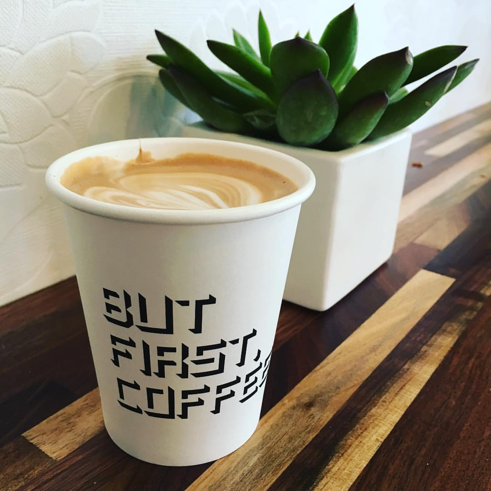
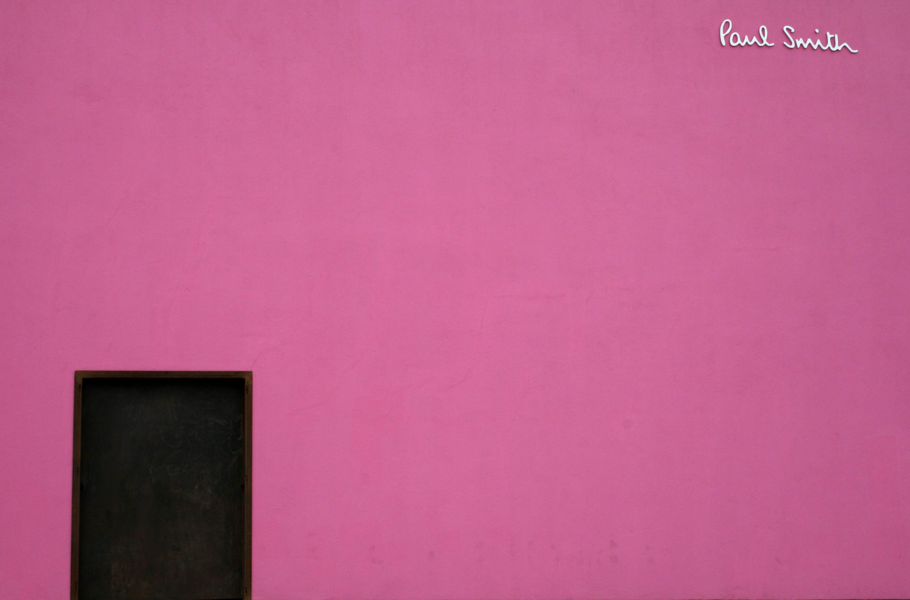
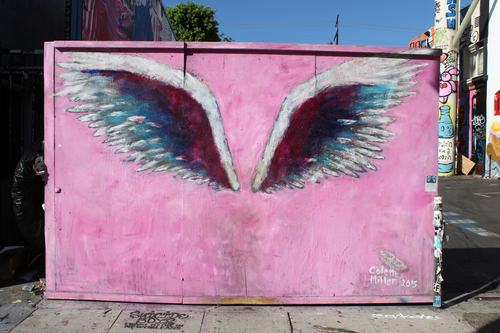
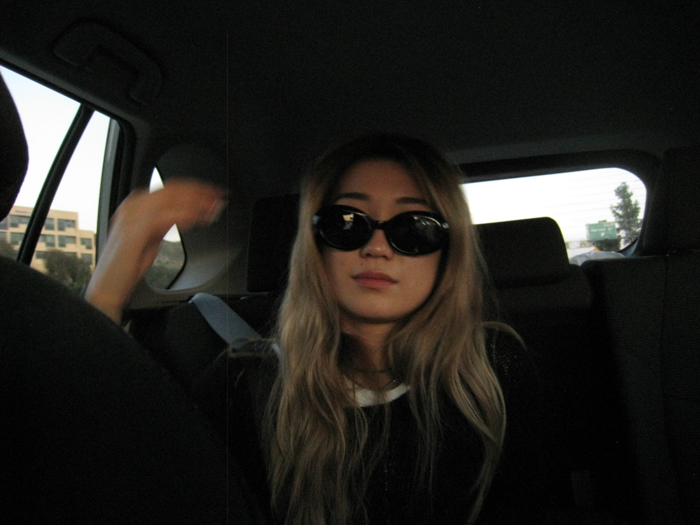

WELCOME TO LA
This LA Tumblr Girl Itinerary
will take you through the era(and city's) most
Instagram-worthy
locations.
Every location was chosen with 2010s Instagram FOMO
in mind(good luck with the afternoon traffic though, sorry)
I have the perfect day
planned to fill your feed with cotton-candy skies and infamously Instagrammable food, so I hope you
brought your studded Wildflower phone case, Mophie portable charger, extra Instax Mini film, and
Tumblr Girls by G-Eazy
Playlist...
THE ITINERARY
First Stop: Alfred Coffee
But first, coffee. take out coffee cup at Alfred Coffee in Los Angeles California on Melrose Avenue" />Location: 8428 Melrose Pl, Los Angeles, CA 90069
But first, coffee.
Naturally the first stop of the day, Alfred
Coffee is single-handedly to blame for one of the most defining features of the 2010's: Grid
posting heavily filtered latte pictures, bonus points for catchphrases, succulents, and
otherwise millenial coffeeshop decor in the background.
Order an iced coffee to go
and don't forget to take a latte picture with the But first, coffee.
sign on your way
out!
Stop #2: The Pink Wall
Location: 8221 Melrose Ave, Los Angeles, CA 90046
Now that you're on Melrose, there's only one place to go, the Pink Wall. I heard that this was
the most photographed wall on Instagram. Formally known as the Paul Smith Pink Wall, the
infamous Instagram background stands as a historical landmark of the Golden Age
of early
LA influencer culture.
Although you may be backlit, this is the perfect opportunity
for another latte picture. And if you have a Instax or digital camera, you know what to do(flash
on!).
Stop #3: LA Angel Wings
Location: 8025 Melrose Ave Los Angeles, CA 90046
The obvious next move is to go take outfit pictures at the angel wing mural. Painted by Colette
Miller, the mural was unavoidable around 2015, with various renditions popping up all over the
world.
This photo op lives near countless boutiques, consignment/secondhand stores,
and (on Sundays) the Melrose Trading Post.
Stop #4: Urth Caffe(for an afternoon smoothie)

Location: 8565 Melrose Ave, West Hollywood, CA 90069
Before Erewhon there was Urth. Make your way down Melrose to West Hollywood. Although originally
popularised for, you guessed it, Coffee, the it-girls
lunched at Urth. Paninis, Salads,
Smoothies, paired with Matcha or Coffee so aethetically-pleasing, the food reminds you that
phone eats first
.
Bring a laptop and draft a
Summer Morning Routine
video to film tomorrow or pull out your phone to take a flatlay
featuring the polaroid pictures from the pink wall this morning for the full experience!
Stop #5: Santa Monica Pier Ferris Wheel(for sunset) and the Venice sign(for dinner)

Location: 200 Santa Monica Pier, Santa Monica, CA 90401
Get your playlist loaded up and make your way over to Santa Monica. (Optional: Take the scenic
route down Sunset and through Beverly Hills and Rodeo Drive if traffic allows it!)
Spend the rest of the afternoon on the pier, and come down to the beach during
sunset for the perfect beach sunset photo in front of the pier and ferris wheel!
Hope you saw this ahead of time and made a rezzie
because its time for
dinner. Make your way over to a chic resturant in Venice. Make sure to get a photo at the
VENICE
sign at
Pacific Ave & Windward Ave, 1501 Main St #205, Venice, CA 90291.
Optional Final Stop: Griffith Observatory

Location: 8428 Melrose Pl, Los Angeles, CA 90069
Hopefully, the traffic is clearing up, make your way back towards the Hollywood Hills. Drive up
to find one of the best views of DTLA, avaliable to the public.
I imagine you have a
perfect queue of songs to play on the journey up, and once you get there~
POP QUIZ
What was the most popular LA tumblr girl lip product in 2015?
- EOS Lip Balm
- Baby Lips(Maybelline)
- Kylie Lip Kit
- Cherry Cola Lip Smackers
If you answered EOS or Kylie Lip Kit, you were SO close. EOS was at it's peak in 2012 and the
infamous King Kylie
Lip Kits launched late 2015.
Answer: Baby Lips
WE MADE IT! YAY <3

After the most aesthetic, 2010s day of your life, your camera roll better look straight out of 2015,
Instagram filters and all. Growing up, I spent many summers in LA visiting family. During my
extended visits, these were some of my favourite spots to drag my family to when we were in the
city.
Hope you had the most aesthetic day EVER! xoxo